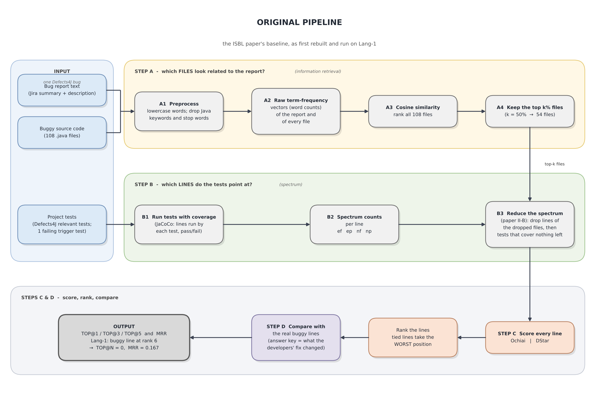
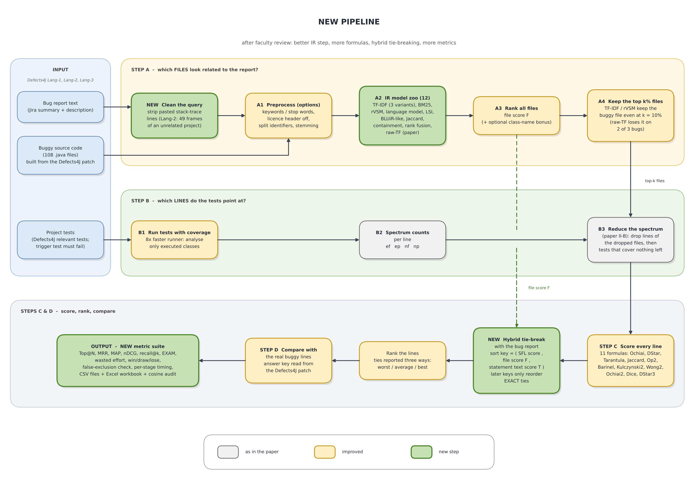
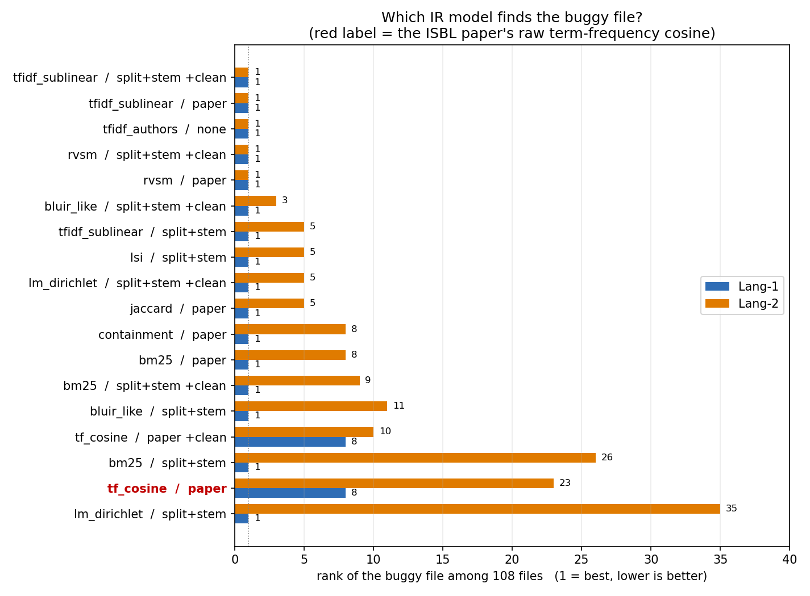
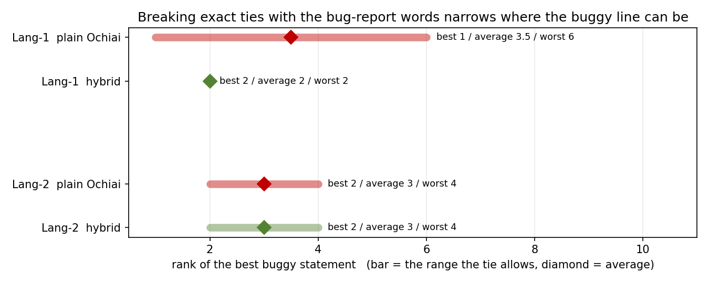
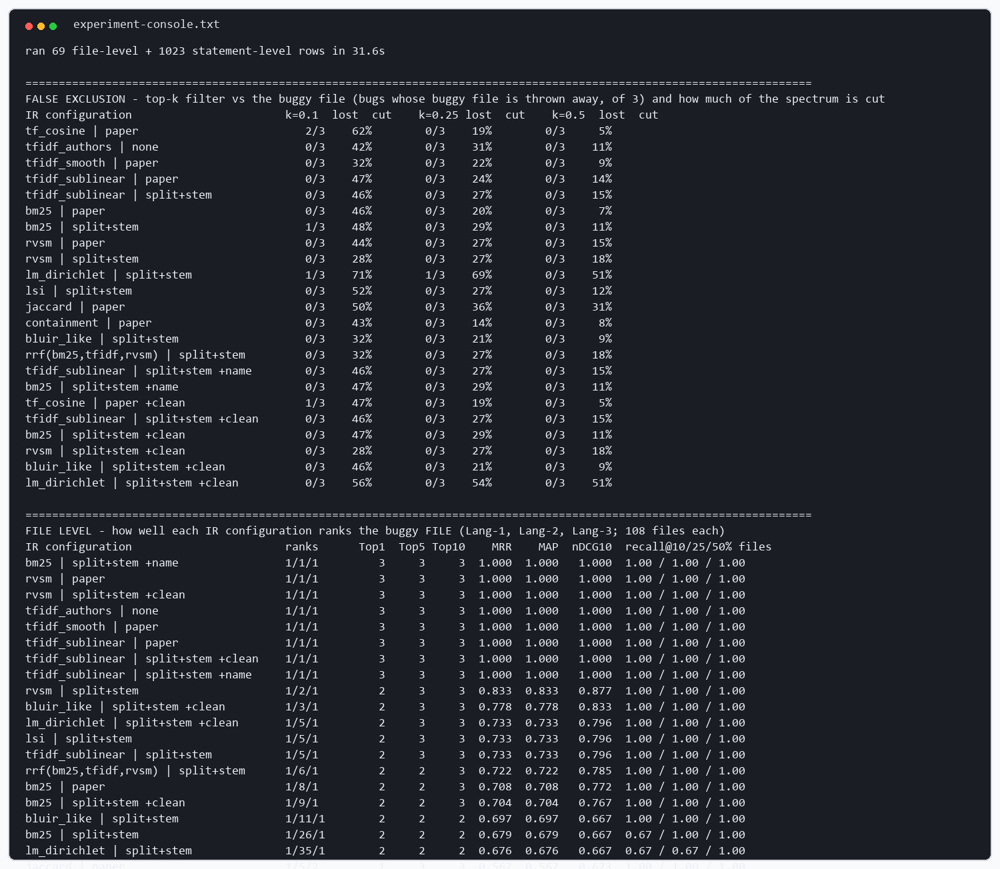
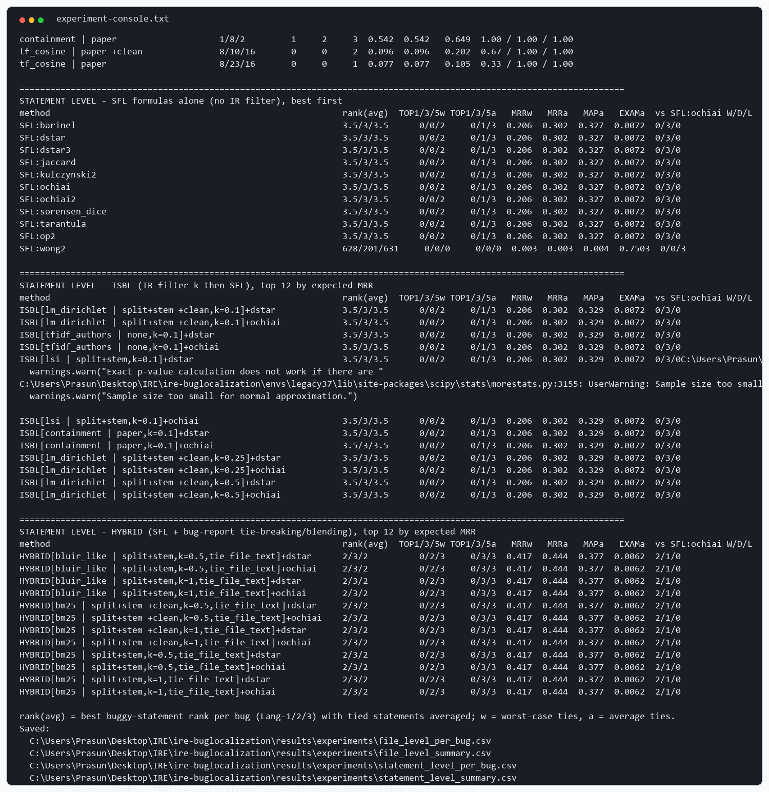

Statement-Level Bug Localization using Information Retrieval and Spectrum
This project ranks executable Java lines so a developer can inspect the most suspicious code first. It combines a Jira bug report, Java source text and the pass/fail plus line-coverage evidence of tests.
Scope: Lang-1, Lang-2 and Lang-3 from Defects4J 1.4.0. The original publication evaluates 373 buggy versions across six projects. This implementation is a working reconstruction and a three-bug case study, not a reproduction of the paper's numerical claims.
Central research question: Can a file-level text filter safely reduce the search area, and can line-level text break the ties left by spectrum formulas?
Project report · Experiment protocol · Combined PDF · Repository README
Three bug types test three different localization difficulties
| Jira bug | Defect mechanism | Answer-key lines | Relevant tests | Full spectrum lines |
|---|---|---|---|---|
| LANG-747 / Lang-1 | Wrong hexadecimal range condition in createNumber() | NumberUtils.java:467, 468, 471 | 173 | 981 |
| LANG-879 / Lang-2 | Missing locale-validation guard | LocaleUtils.java:92, omission proxy | 14 | 208 |
| LANG-693 / Lang-3 | Missing floating-point precision and type-selection guards | NumberUtils.java:593, 597, 601, 605 | 172 | 979 |
How the JSON configurations control an experiment
| Configuration field | Meaning in this project | Examples |
|---|---|---|
bug_report | Jira summary and description used as the IR query | data/bug_reports/Lang-*.json |
repo / src_dir / classes_dir | Buggy source, compiled classes and test classes locations | work-lang/src/main/java |
coverage_file | Cached per-test JaCoCo matrix | data/coverage/Lang-1.tsv |
k | Fraction of files retained after IR ranking | 0.1, 0.25, 0.5 |
sfl | Spectrum formula or formulas to run | ochiai, dstar |
tie | Position assigned when scores are equal | worst baseline configuration |
ir_model / ir_options | Retrieval model and preprocessing choices | tfidf_sublinear, split/stem/clean |
test_scope | Whether relevant tests or the full Lang suite are analyzed | relevant / all |
trigger_tests_file | Defects4J test expected to fail | trigger_tests/1, /2, /3 |
answer_key_patch | Developer source patch used only for evaluation | Defects4J patch or prepared Lang-2/3 patch |
Omission answer key: for a missing guard or missing branch, the patch has no existing buggy line at the exact insertion point. The answer-key parser uses the first existing buggy-side line after the gap. This is a scoring convention, not proof that the existing adjacent line caused the defect.
Lang-1 50% baseline JSON · Lang-1 TF-IDF JSON · Lang-2 JSON · Lang-3 JSON
The original pipeline: retrieval followed by spectrum ranking

Pipeline Stage 1: read a bug report and build a file ranking
- Input. Read the Jira summary and description, checkout the buggy source, and identify Defects4J relevant tests.
- Preprocess text. Convert report and source text to lowercase words. Remove Java keywords and stop words. Optionally split identifiers and stems in the expanded engine.
- Create term vectors. Represent the bug report and every Java file as term-frequency vectors. In the baseline, the raw word count is the vector weight.
- Rank files. Use cosine similarity to compare the report vector with each file vector. Sort descending and keep the top
k%.
Pipeline Stage 2: collect test coverage and build a spectrum
- Run tests separately. The JaCoCo runner starts the Java 8 test process and records which executable source lines each test executes.
- Classify tests. Only the Defects4J trigger test is considered failing unless the relevant/full-suite run explicitly applies the project cleaning rule.
- Filter candidates. Remove covered lines that belong to files omitted by the top-k shortlist.
- Reduce tests. After candidate removal, rebuild the spectrum and drop tests that execute none of the remaining lines.
- Count each line. Produce
(ef, ep, nf, np): failing/pass runs that execute the line and failing/pass runs that skip it.
Pipeline Stage 3: score, rank and evaluate
- Apply SFL. Compute Ochiai, DStar or another formula independently for every surviving executable line.
- Rank lines. Sort descending by score. Equal values are ties; the baseline reports worst, average and best possible positions.
- Evaluate. Match ranked source locations against the developer patch-derived answer key and calculate the metrics below.
How to present the original diagram one stage at a time
| Diagram region | What enters | What happens | What leaves |
|---|---|---|---|
| Blue input | Bug report, 108 source files, project tests | The three evidence sources are kept separate | Text query, source corpus, test executions |
| Yellow Step A | Report and source files | Tokenize, clean, vectorize and cosine-rank files | Shortlist of top k% files |
| Green Step B | Tests and shortlist | Collect JaCoCo line coverage and ef/ep/nf/np counts | Reduced test×line spectrum |
| Red Steps C–D | Reduced spectrum and answer key | Score/rank lines, then compare only after ranking | TOP@N, MRR and ranked evidence |
One bullet for each stage of the current experiment pipeline

- Prepare three buggy revisions. Lang-1 uses mapped Apache history; Lang-2/3 prepare fixed commits and reverse the Defects4J source patch to reconstruct the buggy side.
- Clean report noise. Strip Java stack-frame lines when requested, because Lang-2 contains 49 unrelated pasted frames that add generic terms.
- Compare 23 retrieval configurations. Run raw TF, TF-IDF variants, BM25, rVSM, language model, LSI, set models, BLUiR-style, rank fusion and preprocessing combinations.
- Collect faster JaCoCo evidence. Run each relevant test with per-test coverage while analyzing only executed classes, instead of re-analyzing every class after every test.
- Apply file cutoffs. Test 10%, 25% and 50% shortlists. Record when a buggy file is excluded and how much of the statement spectrum is removed.
- Calculate 11 SFL scores. Use Ochiai and DStar for the main ISBL and hybrid comparison, and compare all formulas in the SFL-only grid.
- Add optional tie-breaking text. Preserve exact SFL order, and only use file and/or statement text to reorder lines sharing the same spectrum score.
- Record all metric families. Export file retrieval, first-hit, all-relevant-item, search-effort, statistical and diagnosis values to CSV and Excel.
- Generate evidence artifacts. Save per-bug JSON/CSV values, console text, cosine audit data and a combined Excel workbook for presentation.
How the updated diagram differs from the original
| Updated region | New work performed | Why it matters | Output used later |
|---|---|---|---|
| Green query cleaning | Remove stack-frame lines and optional license text | Prevents an unrelated stack trace from dominating common terms | Clean report text |
| Yellow preprocessing | Remove keywords/stops, split identifiers, stem words | Controls text granularity and noise | Comparable query and file token lists |
| Green IR zoo | Compare 12 model families/23 configurations | Tests whether weighting and structure improve file rank | File scores F and ordered shortlist |
| Yellow coverage runner | Analyze only executed classes per test | Keeps equivalent coverage with lower collection cost | Test×line coverage matrix |
| Red scoring grid | Run 11 formulas plus Ochiai/DStar hybrids | Shows whether coverage formulas solve the tie problem | Spectrum score S |
| Green hybrid step | Add file score F and statement score T to exact-tie keys | Uses independent bug-report text without overriding unequal S scores | Final statement ranking |
| Green output step | Write CSV, Excel, timing, audit and diagnostics | Creates transparent evidence for all comparisons | Presenter tables and caveats |
Open updated v2 pipeline · Open Graphviz source
How our code implements the pipeline
The diagram describes the research flow; these modules turn it into executable steps. The first six rows create the ranked candidates, and the final row evaluates those candidates against the patch-derived answer key. In particular, the answer key is not passed into retrieval, coverage collection, or ranking.
| Code location | What the code does | Why that step matters |
|---|---|---|
baseline/pipeline.py | Loads the JSON configuration, Java files and Jira summary/description; coordinates one complete baseline run and records stage timings. | Provides the reproducible path from a bug configuration to result rows. |
baseline/ir.py and baseline/ir_models.py | Tokenizes the report and source, applies configured preprocessing, computes model scores, sorts files, and selects the top-\(k\) shortlist. | Converts text relevance into an ordered file-level search area; model rankings are deterministic, with file name as the tie-break. |
baseline/spectrum.py | Reads per-test JaCoCo coverage, counts executions and omissions, filters non-trigger failures where configured, and reduces tests/lines to shortlisted files. | Builds the evidence that connects test outcomes to executable source lines. |
baseline/sfl.py | Maps each line's \((ef,ep,nf,np)\) tuple to a suspiciousness value, including Ochiai, DStar and the additional formulas. | Applies the same formula independently to every line in the full or reduced spectrum. |
baseline/ranking.py | Sorts lines by descending score and assigns best, average, or worst rank to tied groups. | Makes tie uncertainty explicit instead of silently choosing an arbitrary rank. |
baseline/hybrid.py | Computes normalized file and statement-text evidence, then builds either exact-tie keys or the explicitly cross-score linear/multiplicative hybrids. | Separates variants that preserve SFL ordering from variants allowed to change it. |
evaluation/metrics.py, experiments/engine.py and run_experiments.py | Derives the answer key for evaluation, calculates per-bug and aggregate metrics, and exports CSV summaries and diagnostics. | Keeps evaluation separate from ranking and makes comparisons auditable from saved outputs. |
Important code-level distinction: the baseline runner and the experiment engine share the ranking, spectrum, metric, and formula helpers, but serve different purposes. The baseline runner reads one configured experiment (including cached or newly collected coverage); the experiment engine runs the fixed comparison grid over the three prepared bugs and writes the presentation CSVs.
All information-retrieval formulas used by the project
| Model | Formula or construction | One-line explanation and where used |
|---|---|---|
| Raw-TF cosine | \(\displaystyle \operatorname{cos}(q,d)=\frac{\sum_t q_t d_t}{\lVert q\rVert_2\lVert d\rVert_2}\) | Explanation: compares the direction of report and file word-count vectors.Where used: baseline file ranking and the raw-TF configuration in the IR comparison grid. |
| Authors' TF-IDF | TF(raw) × IDF=1+ln(N/df), fitted over files plus query, cosine | Explanation: gives rarer terms more weight using the authors' repository-style weighting.Where used: the tfidf_authors file-ranking configuration. |
| Smoothed TF-IDF | \(\displaystyle \operatorname{idf}(t)=\ln\left(\frac{N+1}{df(t)+1}\right)+1\) | Explanation: multiplies raw term frequency by an IDF value that remains defined for rare terms.Where used: the tfidf_smooth file-ranking configuration. |
| Sublinear TF-IDF | \(\displaystyle tf_{sub}(t,d)=1+\ln tf(t,d)\) | Explanation: reduces the extra influence of repeated terms before applying IDF and cosine similarity.Where used: the tfidf_sublinear configurations in the file-ranking and ISBL/hybrid experiment grids. |
| BM25 | \(\displaystyle \sum_t qtf(t)\,\operatorname{idf}_B(t)\frac{tf(t,d)(k_1+1)}{tf(t,d)+k_1(1-b+b\,dl/avgdl)}\) | Explanation: balances query frequency, term rarity, and document length (\(k_1=1.2,\ b=.75\)).Where used: the bm25 file-ranking, ISBL, and hybrid configurations. |
| rVSM / BugLocator text component | g(length) × cos(log-TF×ln(N/df)) | Explanation: combines log-weighted cosine similarity with a file-length factor; similar-bug history is not implemented.Where used: the rvsm file-ranking, ISBL, and hybrid configurations. |
| Dirichlet LM | \(\displaystyle \sum_t \ln\frac{tf(t,d)+\mu\,p(t|C)}{dl+\mu},\quad \mu=2000\) | Explanation: estimates how likely the bug-report terms are under a file, with collection-level smoothing.Where used: the lm_dirichlet file-ranking configuration. |
| LSI | Sublinear TF-IDF → truncated SVD up to 50 directions → cosine | Explanation: compares query and files in a reduced space that can capture related terms.Where used: the lsi file-ranking configuration. |
| Jaccard | \(\displaystyle J(Q,D)=\frac{|Q\cap D|}{|Q\cup D|}\) | Explanation: measures the overlap of distinct report terms and file terms.Where used: the jaccard file-ranking configuration. |
| Containment | \(\displaystyle C(Q,D)=\frac{|Q\cap D|}{|Q|}\) | Explanation: measures what fraction of distinct report terms appear in a file.Where used: the containment file-ranking configuration. |
| BLUiR-style | Sum of BM25 values across report and source fields | Explanation: matches report fields against class, method, identifier, and comment fields.Where used: the bluir file-ranking, ISBL, and hybrid configurations. |
| Reciprocal-rank fusion | \(\displaystyle RRF(d)=\sum_m \frac{1}{60+\operatorname{rank}_m(d)}\) | Explanation: combines model rankings without comparing their incompatible raw score scales.Where used: the rrf combination of BM25, sublinear TF-IDF, and rVSM in file-ranking and hybrid experiments. |
Preprocessing options
Three basic retrieval ideas: the bug report is the query, each Java file is a document, and each distinct word or identifier is a term. Term frequency (TF) counts a term inside one document; document frequency (DF) counts how many files contain it; inverse document frequency (IDF) gives rarer terms more weight. A similarity score orders files by how well their terms match the query—it is a search-priority signal, not proof of defect causality.
remove_keywords, remove_stopwords, drop_license, split_identifiers, stem, clean_query and name_match_weight. Identifier splitting turns createNumber into create number; stemming merges grammatical variants. Stack cleaning removes lines beginning in at, ... N more or Caused by:.
Cosine-audit result
| Bug | Maximum difference vs scikit-learn | Maximum difference vs SciPy | Ranking identical? |
|---|---|---|---|
| Lang-1 | 4.16×10⁻¹⁷ | 8.33×10⁻¹⁷ | Yes |
| Lang-2 | 5.55×10⁻¹⁷ | 1.11×10⁻¹⁶ | Yes |
| Lang-3 | 5.55×10⁻¹⁷ | 8.33×10⁻¹⁷ | Yes |
The arithmetic is verified. The retrieval weakness is term weighting and noisy query text, not a cosine implementation error.
Cosine correctness CSV · Cosine properties CSV · Term-contribution audit CSV
Spectrum formulas and coverage counts
ef = failing tests that execute the line; ep = passing tests that execute it.
nf = failing tests that skip the line; np = passing tests that skip it.
Lang-1 reduced example: six tied lines have (ef,ep,nf,np)=(1,3,0,166). Ochiai = 0.500 and DStar = 0.333. Three of the six are answer-key lines.
Counts explained: \(ef\) and \(ep\) show whether failing and passing tests execute the line; \(nf\) and \(np\) show whether they skip it.
| Formula | Exact implementation | One-line explanation and where used |
|---|---|---|
| Ochiai | \(\displaystyle O=\frac{ef}{\sqrt{(ef+nf)(ef+ep)}}\) | Explanation: measures overlap between lines executed by failing tests and lines executed at all.Where used: the SFL-only baseline, all ISBL cutoff runs, and the hybrid baseline/comparisons. |
| DStar\(^{n}\) / DStar3 | \(\displaystyle D^{*n}=\frac{ef^n}{ep+nf}\), \(n=2\) or \(3\) | Explanation: squares or cubes failing executions while penalizing passing executions and failing tests that skipped the line.Where used: DStar\(^2\) in ISBL/hybrid runs; DStar\(^2\) and DStar\(^3\) in the SFL-only comparison. |
| Tarantula | \(\displaystyle \frac{f}{f+p},\ f=\frac{ef}{ef+nf},\ p=\frac{ep}{ep+np}\) | Explanation: compares the shares of failing and passing tests that execute a line.Where used: the SFL-only formula comparison grid. |
| Jaccard | \(\displaystyle J=\frac{ef}{ef+nf+ep}\) | Explanation: rewards failing executions and discounts passing executions or failing tests that skipped the line.Where used: the SFL-only formula comparison grid. |
| Sørensen-Dice | \(\displaystyle SD=\frac{2ef}{2ef+nf+ep}\) | Explanation: like Jaccard, but gives the failing-execution overlap twice the weight.Where used: the SFL-only formula comparison grid. |
| Kulczynski2 | \(\displaystyle \frac12\left[\frac{ef}{ef+nf}+\frac{ef}{ef+ep}\right]\) | Explanation: averages failing-test coverage rate and the share of line executions that came from failures.Where used: the SFL-only formula comparison grid. |
| Op2 | \(\displaystyle ef-\frac{ep}{ep+np+1}\) | Explanation: starts with failing executions and subtracts a bounded penalty for passing executions.Where used: the SFL-only formula comparison grid. |
| Barinel | \(\displaystyle 1-\frac{ep}{ep+ef}\), if \(ep+ef>0\) | Explanation: scores the fraction of line executions contributed by failing tests.Where used: the SFL-only formula comparison grid. |
| Wong2 | \(\displaystyle ef-ep\) | Explanation: subtracts passing executions directly from failing executions.Where used: the SFL-only formula comparison grid, including the reported low-performing Wong2 result. |
| Ochiai2 | \(\displaystyle O_2=\frac{ef\,np}{\sqrt{(ef+ep)(nf+np)(ef+nf)(ep+np)}}\) | Explanation: uses all four counts and favors lines executed by failures but skipped by passing tests.Where used: the SFL-only formula comparison grid. |
Why formulas leave ties: if two lines have identical four counts, every deterministic formula based on those counts produces the same score. Extra source text or test structure is required to separate the lines.
How to read the values: each formula produces a score for one executable line; lines are sorted from higher score (more suspicious) to lower score. The formula helpers return zero when a formula's denominator would be zero, except DStar, which returns positive infinity when \(ef>0\) and its denominator is zero. The hybrid helper replaces positive infinity with a finite value above the largest finite score before forming its ranking keys.
Worked example: why six Lang-1 lines tie
For each of the six lines, one failing test and three passing tests execute it, while no failing test and 166 passing tests skip it. The numbers are identical, so a coverage-only formula cannot tell these source lines apart:
Explanation: for intuition, Tarantula is about \(0.983\): all failing tests execute the line, while only \(3/169\) passing tests do. Every tied line receives the same value.Where used: this is a worked Lang-1 spectrum example; statement-text hybrid scoring subsequently orders lines within this coverage tie.
The hybrid score uses new evidence only inside exact ties
File score F: min-max normalize the IR score of the statement's file across all ranked files.Where used: copied onto each covered statement as a secondary tie-break key or hybrid input.
Statement text score T: for every distinct source-line token shared with the report, add idf(t)=ln(1+N/df(t)), where N is the project-file count.
Explanation: \(T(s)\) adds rare matching words found on source line \(s\). A token appearing in fewer files receives a larger weight.Where used: computed by hybrid.statement_text_scores() and used to break SFL ties or as an input to blended modes.
| Hybrid mode | Sort key | One-line explanation and where used |
|---|---|---|
sfl | \((S)\) | Explanation: orders statements by spectrum suspiciousness alone.Where used: plain SFL and ISBL control results. |
tie_file | \((S,F)\) | Explanation: uses file relevance only when two statements have equal SFL scores.Where used: one exact-tie variant in the hybrid comparison grid. |
tie_text | \((S,T)\) | Explanation: uses report-to-line text relevance only inside an SFL tie.Where used: one exact-tie variant in the hybrid comparison grid. |
tie_file_text | \((S,F,T)\) | Explanation: checks file relevance and then line-text relevance within an SFL tie.Where used: one exact-tie variant in the hybrid comparison grid. |
linear | \(\displaystyle (1-a-b)\widetilde S+a\widetilde F+b\widetilde T\) | Explanation: blends normalized spectrum, file, and text scores, so it can reorder unequal SFL scores.Where used: exploratory weighted hybrid variants in the comparison grid. |
mult | \(\displaystyle \widetilde S(1+a\widetilde F)\) | Explanation: scales the normalized spectrum score by the normalized file score.Where used: an exploratory multiplicative hybrid variant in the comparison grid. |
Explanation: min-max scaling maps each set of scores to \([0,1]\); when all values are equal, the implementation returns 0. Where used: only the linear and multiplicative modes normalize SFL, file, and text scores; DStar infinity is converted to a finite value in the hybrid helper.
Metrics used to evaluate the hybrid ranking
For a tie group occupying positions \(a,\ldots,b\), report \(a\), \((a+b)/2\), and \(b\). On Lang-1 the plain Ochiai range is 1 / 3.5 / 6; exact-tie text ranking narrows it to 2 / 2 / 2.Where used: ranking.rank_statements() and the per-bug tie-sensitivity tables.
Explanation: averages reciprocal worst-tie first-hit ranks; missing buggy files contribute 0.Where used: the worst-tie MRR column in the statement-level summary and the reported hybrid comparison (0.206 to 0.417).
Average-tie MRR changes from \(0.302\) to \(0.444\). MAP changes from \(0.327\) to approximately \(0.376\)-\(0.377\), because it considers all answer-key lines rather than only the first hit.
nDCG@10 rises from \(0.443\) to \(0.492\). Recall@10 remains \(0.75\). Mean EXAM falls from \(0.719\%\) to \(0.617\%\), and mean wasted effort falls from \(2.333\) to \(1.333\) positions.
Compared with plain Ochiai for the average-tie first-hit rank, the hybrid gives 2 wins, 1 draw, 0 losses across the three bugs. This is a small-sample result, not a significance claim.
Presentation caveat: tie_text and tie_file_text are project extensions. The tested variants were compared on the same three bugs, so they are hypotheses for held-out validation rather than proven general ranking models.
Ranking and inspection metrics
Explanation: bug rank \(r_b\) is the lowest rank of any answer-key line; if none remain after filtering, it is missing.Where used: metrics.bug_rank() computes the first-hit rank used by TOP@N and MRR.
Explanation: TOP@N counts bugs whose first answer-key line appears in the first N positions; it is a count, not a percentage.Where used: metrics.top_n() produces the TOP@1/3/5/10 result columns.
Explanation: MRR rewards earlier first hits; a missing item contributes zero.Where used: metrics.mrr() and experiment summaries compare file- and statement-level rankings.
Explanation: AP rewards finding answer-key items early; MAP averages AP across bugs, keeping missing items in the full answer-key denominator.Where used: metrics.ap_over_all_relevant() feeds file-level and statement-level result summaries.
Explanation: nDCG@K compares actual and ideal rankings, giving more credit to relevant items near rank 1.Where used: metrics.ndcg_at_k() produces the file-level and statement-level nDCG results, including nDCG@10.
Explanation: recall is the fraction of all answer-key items found; precision is the relevant fraction of the top-K list.Where used: metrics.recall_at_k() is reported for file and statement results; precision_at_k() is available as a helper but is not emphasized in the result tables.
Explanation: EXAM estimates the share of the list inspected before the first answer-key line; wasted effort counts preceding irrelevant lines.Where used: localization diagnostics and statement-level summaries report EXAM and wasted effort; both are lower-is-better.
File-ranking and filter-safety metrics
Explanation: file recall@k% is 1 if a buggy file survives in the top-k shortlist and 0 otherwise.Where used: the experiment engine reports file recall at each cutoff; metrics.file_recall_at_k() provides the binary survival check.
Explanation: statement cut is the fraction of covered statements removed by the file filter; interpret it together with the number of lost bugs.Where used: run_experiments.py calculates the cutoff values in false_exclusion.csv.
Explanation: for each bug, compare candidate rank \(r_{A,b}\) with plain Ochiai rank \(r_{B,b}\); lower is better.Where used: metrics.win_draw_lose() assigns the per-bug result in the hybrid comparison.
Explanation: count each per-bug outcome to form W/D/L totals; missing ranks are represented as \(\infty\).Where used: engine.summarize_statements() writes the W/D/L comparison against plain Ochiai to the statement summary.
Tie and ranking diagnostics
Explanation: for a tie group spanning positions \(a\) through \(b\), best, average, and worst ranks are \(a\), \((a+b)/2\), and \(b\).Where used: ranking.rank_statements() assigns these tie variants for per-bug ranks and MRR.
Explanation: mean rank averages located answer-key positions; median rank is less affected by a distant item.Where used: diagnostics.localization_diagnostics() records these as descriptive statement-ranking diagnostics.
Explanation: the seeded 2,000-resample percentile bootstrap estimates an interval for mean MRR; three bugs are too few for a strong general claim.Where used: metrics.bootstrap_ci() adds lower and upper confidence limits to statement-level summary rows.
Explanation: the two-sided paired signed-rank test checks rank differences; missing ranks become a large sentinel, and identical pairs return no test.Where used: metrics.wilcoxon_p() supplies an exploratory paired comparison in the statement summary.
Explanation: density measures how many test-line cells show execution; the averages describe coverage per test and per line.Where used: diagnostics.spectrum_diagnostics() adds these coverage-shape values to per-run diagnostics.
Explanation: counts the distinct SFL scores; fewer values can mean more lines are tied.Where used: localization diagnostics report this beside rank and tie-group information.
Explanation: tie-group size counts lines sharing a buggy line's score; buggy-in-tie counts answer-key lines in that group.Where used: localization diagnostics explain whether poor ranks come from large SFL ties.
IR and uncertainty diagnostics
Explanation: entropy rises when positive IR scores are spread more evenly across files, which can indicate weak separation.Where used: diagnostics.ir_diagnostics() records score entropy as a file-ranking uncertainty diagnostic.
Explanation: subtracts the second-highest cosine from the highest; a small gap means the top file is weakly separated.Where used: diagnostics.ir_diagnostics() records the gap for each file-ranking run.
Explanation: divides the buggy-file rank by the number of files; this approximates the smallest cutoff that retains the file.Where used: diagnostics.ir_diagnostics() records the percentile and rank for file-retrieval diagnostics.
Actual raw baseline values at 50% raw-TF cutoff
| Bug | Full / filtered lines | Full / filtered tests | Buggy-file raw-TF rank | Worst/avg/best rank | MRR worst | TOP@5 worst |
|---|---|---|---|---|---|---|
| Lang-1 | 981 / 913 | 173 / 170 | 8 / 108 | 6 / 3.5 / 1 | 0.1667 | 0 |
| Lang-2 | 208 / 208 | 14 / 14 | 23 / 108 | 4 / 3 / 2 | 0.2500 | 1 |
| Lang-3 | 979 / 909 | 172 / 169 | 16 / 108 | 5 / 3.5 / 2 | 0.2000 | 1 |
Table explanation: “filtered” values are the spectrum after the 50% file shortlist. Lower line ranks and higher MRR are better. The rank `6/3.5/1` means worst/average/best possible positions.
Per-bug interpretation
- Lang-1. Three answer-key lines and three non-buggy lines tie at Ochiai 0.500. The worst, average and best ranks are 6, 3.5 and 1. File filtering removes 68 of 981 lines but does not alter this tie.
- Lang-2. The answer key is proxy line 92. It sits in a 3-line Ochiai tie. The average rank is 3 and the worst rank is 4. The raw-TF buggy-file rank is poor at 23.
- Lang-3. The four answer-key lines have different later ranks, while the best answer-key line is rank 5. The raw-TF buggy-file rank is 16 and 70 lines are removed at 50%.
Lang-1 full-suite check: 2,273 cleaned tests cover 11,102 full lines and the 50% filter keeps 6,593 lines. The worst/average/best rank remains 6/3.5/1 under Ochiai and DStar. The 40.6% list reduction is not accompanied by statement-rank improvement.
Lang-1 relevant JSON · Lang-1 full-suite JSON · Lang-2 JSON · Lang-3 JSON
Weighted retrieval improves both rank and cutoff safety
| IR configuration | Buggy-file rank Lang-1/2/3 | Top@1 | MRR | 10% cutoff lost bugs | Mean 10% statement cut |
|---|---|---|---|---|---|
| Raw TF / paper | 8 / 23 / 16 | 0 | 0.077 | 2 / 3 | 61.9% |
| Clean raw TF | 8 / 10 / 16 | 0 | 0.096 | 1 / 3 | 47.0% |
| Sublinear TF-IDF / paper | 1 / 1 / 1 | 3 | 1.000 | 0 / 3 | 46.9% |
| Sublinear TF-IDF / split+stem | 1 / 5 / 1 | 2 | 0.733 | 0 / 3 | 45.9% |
| Sublinear TF-IDF / clean | 1 / 1 / 1 | 3 | 1.000 | 0 / 3 | 45.9% |
| rVSM / paper | 1 / 1 / 1 | 3 | 1.000 | 0 / 3 | 43.6% |
Table explanation: the rank is the first-file position for each bug. Top@1 counts bugs whose buggy file is rank 1. MRR rewards earlier file hits; lost bugs and statement cut are read together at the smallest cutoff.
Complete CSV: buggy-file rank by IR configuration
| IR configuration | Rank 1/2/3 | Top@1 | MRR |
|---|---|---|---|
| tf_cosine | paper | 8 / 23 / 16 | 0 | 0.077 |
| tfidf_authors | none | 1 / 1 / 1 | 3 | 1.000 |
| tfidf_smooth | paper | 1 / 1 / 1 | 3 | 1.000 |
| tfidf_sublinear | paper | 1 / 1 / 1 | 3 | 1.000 |
| tfidf_sublinear | split+stem | 1 / 5 / 1 | 2 | 0.733 |
| bm25 | paper | 1 / 8 / 1 | 2 | 0.708 |
| bm25 | split+stem | 1 / 26 / 1 | 2 | 0.679 |
| rvsm | paper | 1 / 1 / 1 | 3 | 1.000 |
| rvsm | split+stem | 1 / 2 / 1 | 2 | 0.833 |
| lm_dirichlet | split+stem | 1 / 35 / 1 | 2 | 0.676 |
| lsi | split+stem | 1 / 5 / 1 | 2 | 0.733 |
| jaccard | paper | 1 / 5 / 2 | 1 | 0.567 |
| containment | paper | 1 / 8 / 2 | 1 | 0.542 |
| bluir_like | split+stem | 1 / 11 / 1 | 2 | 0.697 |
| rrf(bm25,tfidf,rvsm) | split+stem | 1 / 6 / 1 | 2 | 0.722 |
| tfidf_sublinear | split+stem +name | 1 / 1 / 1 | 3 | 1.000 |
| bm25 | split+stem +name | 1 / 1 / 1 | 3 | 1.000 |
| tf_cosine | paper +clean | 8 / 10 / 16 | 0 | 0.096 |
| tfidf_sublinear | split+stem +clean | 1 / 1 / 1 | 3 | 1.000 |
| bm25 | split+stem +clean | 1 / 9 / 1 | 2 | 0.704 |
| rvsm | split+stem +clean | 1 / 1 / 1 | 3 | 1.000 |
| bluir_like | split+stem +clean | 1 / 3 / 1 | 2 | 0.778 |
| lm_dirichlet | split+stem +clean | 1 / 5 / 1 | 2 | 0.733 |
Result explanation: eight configurations achieve rank 1/1/1. This is a strong file-level result, but it is an early-retrieval ceiling: the models still differ in the remaining ranking and in false exclusion.
CSV evidence: false exclusion and statement removal
| IR configuration | k=10% lost/cut | k=25% lost/cut | k=50% lost/cut | Presentation meaning |
|---|---|---|---|---|
| tf_cosine | paper | 2/3 lost · 61.9% | 0/3 · 19.0% | 0/3 · 4.7% | Unsafe at 10%; bug filtering improves at larger cutoffs. |
| tf_cosine | paper +clean | 1/3 lost · 47.0% | 0/3 · 19.0% | 0/3 · 4.7% | Removing Lang-2 trace noise recovers one bug. |
| tfidf_sublinear | paper | 0/3 · 46.9% | 0/3 · 23.7% | 0/3 · 13.9% | Safe small cutoff with strong retrieval weighting. |
| tfidf_sublinear | split+stem+clean | 0/3 · 45.9% | 0/3 · 27.3% | 0/3 · 15.1% | Safest weighted pattern at 10% while keeping useful preprocessing. |
| rVSM | paper | 0/3 · 43.6% | 0/3 · 27.0% | 0/3 · 14.8% | BugLocator-style text similarity remains safe. |
| BM25 | split+stem | 1/3 lost · 47.7% | 0/3 · 29.0% | 0/3 · 10.9% | Preprocessing can hurt Lang-2 at a 10% cutoff. |

Lang-2 noise example
In cosine_audit_why.csv, JavaVersion.java is raw-TF top-1 because java contributes 84%, org 7% and apache 6%. These terms come largely from the pasted stack trace. The file contributes 99.9% of its cosine from terms found in more than half of the 108 files. Cleaning and weighted retrieval correct much of this noise.
| Bug | Wrong top file | Buggy-file rank | Cosine | Terms from >50% of files | Main noisy terms |
|---|---|---|---|---|---|
| Lang-1 | Validate.java | 8 | 0.1198 | 43.8% | not 22%, string 18% |
| Lang-2 | JavaVersion.java | 23 | 0.1112 | 99.9% | java 84%, org 7%, apache 6% |
| Lang-3 | MethodUtils.java | 16 | 0.1376 | 55.1% | string 51%, numberutils 15% |
Audit explanation: the first two columns identify the wrong file selected by raw TF. The final columns show that much of the similarity comes from generic or stack-trace words instead of defect-specific language.
SFL results, tie behavior and hybrid improvement
| Method | Average rank Lang-1/2/3 | Worst MRR | Average MRR | MAP avg | nDCG@10 avg | EXAM avg |
|---|---|---|---|---|---|---|
| Ochiai / DStar / nine similar formulas | 3.5 / 3 / 3.5 | 0.206 | 0.302 | 0.327 | 0.443 | 0.719% |
| Wong2 | 628 / 201 / 631 | 0.003 | 0.003 | 0.004 | 0.000 | 75.03% |
| ISBL raw TF, k=.5, Ochiai | 3.5 / 3 / 3.5 | 0.206 | 0.302 | 0.327 | 0.443 | 0.719% |
| tie_text / tie_file_text hybrid | 2 / 3 / 2 | 0.417 | 0.444 | 0.376–0.377 | 0.492 | 0.617% |
CSV evidence: aggregate statement metrics
| Method | TOP@1/3/5 worst | TOP@1/3/5 average | MRR worst/avg | MAP | nDCG@10 | Recall@10 | W/D/L |
|---|---|---|---|---|---|---|---|
| SFL: Ochiai | 0 / 0 / 2 | 0 / 1 / 3 | 0.206 / 0.302 | 0.327 | 0.443 | 0.75 | 0 / 3 / 0 |
| SFL: Wong2 | 0 / 0 / 0 | 0 / 0 / 0 | 0.003 / 0.003 | 0.004 | 0.000 | 0.00 | 0 / 0 / 3 |
| ISBL raw-TF k=.5 + Ochiai | 0 / 0 / 2 | 0 / 1 / 3 | 0.206 / 0.302 | 0.327 | 0.443 | 0.75 | 0 / 3 / 0 |
| HYBRID tie_text k=.5 + Ochiai | 0 / 2 / 3 | 0 / 3 / 3 | 0.417 / 0.444 | 0.376 | 0.492 | 0.75 | 2 / 1 / 0 |
| HYBRID tie_file_text k=.5 + Ochiai | 0 / 2 / 3 | 0 / 3 / 3 | 0.417 / 0.444 | 0.377 | 0.492 | 0.75 | 2 / 1 / 0 |
Table explanation: ranks are average-tie first-hit positions for Lang-1/Lang-2/Lang-3. MRR rewards earlier first hits; MAP considers every answer-key line; EXAM estimates the fraction inspected.
Per-bug statement CSV: Ochiai versus hybrid text
| Bug | Ochiai worst / avg / best | Hybrid tie-text worst / avg / best | Ochiai MRR avg | Hybrid MRR avg | Hybrid MAP |
|---|---|---|---|---|---|
| Lang-1 | 6 / 3.5 / 1 | 2 / 2 / 2 | 0.286 | 0.500 | 0.3756 |
| Lang-2 | 4 / 3.0 / 2 | 4 / 3.0 / 2 | 0.333 | 0.333 | 1.000 |
| Lang-3 | 5 / 3.5 / 2 | 2 / 2.0 / 2 | 0.286 | 0.500 | 0.2500 |
Per-bug explanation: the hybrid improves Lang-1 and Lang-3 by narrowing exact ties. Lang-2 remains unchanged because its answer-key proxy line and tied statements have no useful shared report text.
Concrete Lang-1 tie result
| Line | Role | Statement text score | Plain tie rank | Hybrid tie rank |
|---|---|---|---|---|
| 474 | Non-buggy | 7.007 | Tied | 1 |
| 467 | Buggy | 5.979 | Tied | 2 |
| 468 | Buggy | 4.771 | Tied | 4 |
| 471 | Buggy | 4.771 | Tied | 4 |
Table explanation: report and source text is strongest on line 474, although 474 is not in the patch. It therefore moves to rank 1. Buggy lines 467, 468 and 471 gain positions inside the tie, while all remaining tied candidates are also considered.
The plain worst/average/best Lang-1 ranks change from 6/3.5/1 to 2/2/2 under the exact-tie text ranking. This narrows uncertainty but can move the best-case rank lower because a non-buggy line becomes rank 1.

Use console and Excel evidence in the presentation
Console: false exclusion and file ranking

8/23/16 is Lang-1/Lang-2/Lang-3.Console: statement and hybrid comparisons

rank(avg) is the average-tie first hit; w and a distinguish worst from average ties. MRR/MAP/nDCG/EXAM and wins / draws / losses (W/D/L) compare every method with plain Ochiai.Workbook sheets to show
| Workbook sheet | What to present |
|---|---|
IR_File_Summary | Ranks, Top@N, MRR/MAP/nDCG and 10/25/50% recall for 23 IR configurations. |
False_Exclusion | At 10/25/50%, lost bugs and mean statement cut for every configuration. |
Statement_Summary | Plain SFL, ISBL and hybrid aggregate metrics, win/draw/loss and tie sensitivity. |
Hybrid_Modes | Exact key, linear and multiplicative hybrid variants. |
Cosine_Audit | Numerical agreement and cosine properties; term-contribution noise. |
Bugs | Bug type, answer key, test count, line count and source locations. |
Metric_Guide | Formula and interpretation of the implemented metrics. |
Data taken directly from the Excel workbook
| Workbook result | Lang-1 | Lang-2 | Lang-3 | Cross-bug interpretation |
|---|---|---|---|---|
| SFL Ochiai average rank | 3.5 | 3.0 | 3.5 | All first hits remain within the top few lines. |
| Hybrid tie_text average rank | 2.0 | 3.0 | 2.0 | Lang-1 and Lang-3 improve; Lang-2 is unchanged. |
| Raw-TF buggy file rank | 8 | 23 | 16 | Retrieval is weakest for Lang-2. |
| Sublinear TF-IDF buggy file rank | 1 | 1 | 1 | Strong first-file retrieval on all three bugs. |
| Ochiai mean EXAM | 0.719% | Developer checks less than 1% on average in this small sample. | ||
| Hybrid mean EXAM | 0.617% | Mean inspection fraction decreases after tie text. | ||
| Wilcoxon value in saved hybrid run | approximately 0.157 | Not significant evidence with only three cases. | ||
Where each technical claim in this report is documented
| Repository document or sheet | Relevant section | Use in presentation |
|---|---|---|
| docs/experiments.md | Sections 2–6 | Bug preparation, cosine audit, file ranking, false exclusion, statement ranking and hybrid limits. |
| docs/REPORT.md | Pipeline, metrics and figures | Full illustrated narrative and explanation of formulas and example line ranks. |
| docs/reproduction.md | Setup and run decisions | Explain environment, commits, test scopes and reproducibility assumptions. |
| docs/architecture.md | Current code structure | Map files to IR, spectrum, ranking, metrics and experiment engine stages. |
| Statement summary CSV | All ISBL and hybrid rows | Source of TOP@N, MRR, MAP, nDCG, EXAM and W/D/L values. |
| File summary CSV | One row per IR configuration | Source of 108-file rank, Top@N and recall values. |
| False exclusion CSV | IR × cutoff rows | Source of lost bug count and statement-cut percentages. |
What is supported, and what is not supported
Supported conclusions
- The code runs end to end for three Lang bugs on JDK 8 and JaCoCo.
- Weighted file retrieval ranks all three buggy files first in the 23-model grid's strongest configurations.
- Better retrieval prevents false exclusion at 10% for the tested weighted models.
- Statement text narrows the exact-tie ranks for Lang-1 and Lang-3.
- The results and intermediate artifacts are reproducible from the repository.
Unsupported claims
- General superiority over the original 373-bug paper.
- Statistical significance with n=3 bugs.
- Generalization across all six Defects4J projects.
- That the first-ranked line caused the defect.
Known implementation assumptions
- JaCoCo executable source lines act as statements; one source line may contain several statements.
- DStar uses exponent 2 in the main comparison and exponent 3 in DStar3.
- Only the Defects4J trigger test is failing in the relevant-test baseline.
- Missing-line answer keys use the first existing buggy-side line after the gap.
- The rVSM implementation includes text similarity but not BugLocator's similar-bug-history component.
- BLUiR-style extraction uses regular expressions, not a complete Java parser.
- The hybrid parameters and the selected tie mode were fixed on the same three-bug sample, so they are exploratory.
Close with two findings and one honest limitation
- Retrieval finding: at 10%, raw TF loses Lang-2 and Lang-3, while sublinear TF-IDF keeps all three buggy files and removes about 46% of the 981/208/979-line spectra on average.
- Ranking finding: exact-tie statement text improves average ranks from
3.5/3/3.5to2/3/2. Worst-tie MRR rises from 0.206 to 0.417, but the result comes from three bugs and was not tuned in a held-out experiment.
Recommended viva sentence: “The project does not prove that a bug localization score identifies causality. It demonstrates that better file text retrieval reduces false exclusion and that statement text can reduce the uncertainty left by coverage ties.”
Next validation
Use a larger held-out Defects4J set across more projects, fix preprocessing and hybrid parameters before seeing labels, retain the answer-key files strictly for evaluation, and report paired confidence intervals and effect sizes with more than three bugs.
README · Reproduction guide · Baseline notes · Literature scan